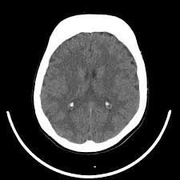

Understanding Thalassemia
Thalassemia is a genetic blood disorder characterized by the body’s inability to produce sufficient hemoglobin, the protein in red blood cells that carries oxygen throughout the body. This leads to anemia, which can cause fatigue, weakness, and other health complications.
Key Points About Thalassemia:
Types of Thalassemia
- Alpha Thalassemia: Caused by mutations in the genes responsible for producing the alpha globin chains of hemoglobin. It can range from mild to severe, with the most severe form being Alpha Thalassemia Major, also known as Hemoglobin Bart’s Hydrops Fetalis, which can be fatal.
- Beta Thalassemia: Caused by mutations in the genes responsible for producing the beta globin chains of hemoglobin. It includes:
- Beta Thalassemia Minor (or Trait): Typically causes mild anemia and may not require treatment.
- Beta Thalassemia Intermedia: Causes moderate anemia and may require occasional blood transfusions.
- Beta Thalassemia Major (or Cooley’s Anemia): A severe form requiring regular blood transfusions and other treatments.
Symptoms
- Fatigue and weakness
- Pale or jaundiced skin
- Bone deformities (especially in the face and skull)
- Delayed growth in children
- Enlarged spleen or liver
Diagnosis
Thalassemia is often diagnosed through blood tests that reveal anemia and abnormal hemoglobin levels. Genetic testing can confirm the diagnosis and determine the specific type of thalassemia.
Treatment
- Regular Blood Transfusions: To manage severe anemia.
- Iron Chelation Therapy: To remove excess iron from the body that accumulates from frequent transfusions.
- Folic Acid Supplements: To help with red blood cell production.
- Bone Marrow or Stem Cell Transplant: May be a potential cure for some individuals, particularly those with Beta Thalassemia Major.
Management
Ongoing medical care and monitoring are essential. Individuals with thalassemia require regular check-ups and may need specialized care from a hematologist.
Prevention and Genetic Counseling
Since thalassemia is inherited, genetic counseling is recommended for individuals with a family history of the disorder or those in high-risk populations to understand the likelihood of passing the condition to offspring.
Thalassemia requires lifelong management, but with appropriate treatment and care, individuals with the condition can lead healthy lives.